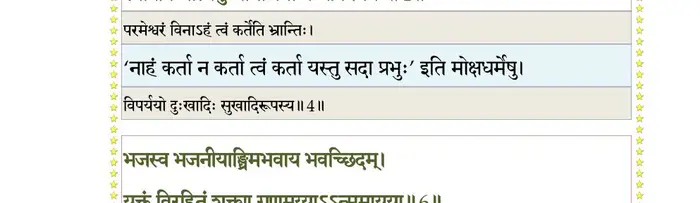
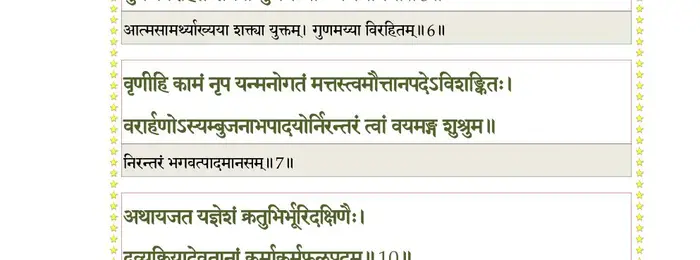
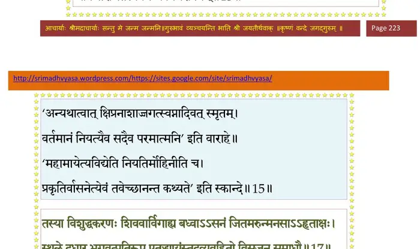
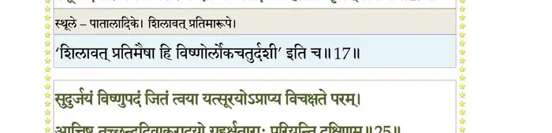
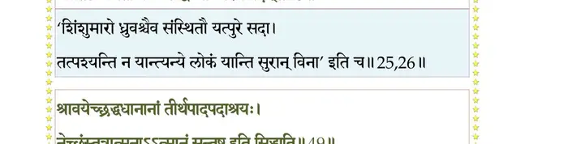
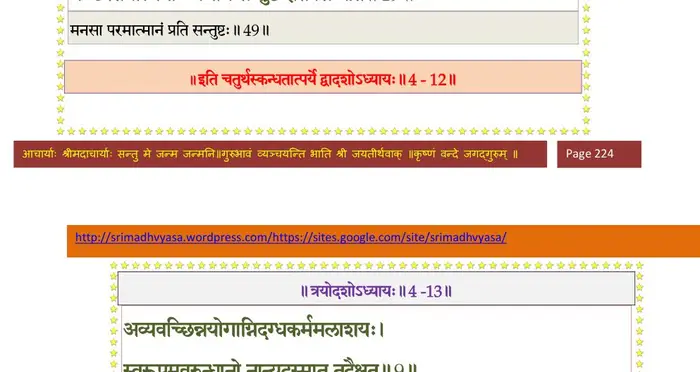

स्कन्ध 4 · अध्याय 12
श्लोक १
मैत्रेय उवाच–
ध्रुवं निवृत्तं प्रतिबुध्य वैशसादपेतमन्युर्भगवान् धनेश्वरः ।
तत्रागतश्चारणयक्षकिन्नरैः संस्तूयमानोऽभ्यवदत् कृताञ्जलिम्।। १ ।।
ध्रुवं निवृत्तं प्रतिबुध्य वैशसादपेतमन्युर्भगवान् धनेश्वरः ।
तत्रागतश्चारणयक्षकिन्नरैः संस्तूयमानोऽभ्यवदत् कृताञ्जलिम्।। १ ।।
श्लोक २
धनद उवाच–
भो भो क्षत्रियदायाद परितुष्टोऽस्मि तेऽनघ ।
यस्त्वं पितामहादेशाद् वैरं दुस्त्यजमत्यजः।। २ ।।
भो भो क्षत्रियदायाद परितुष्टोऽस्मि तेऽनघ ।
यस्त्वं पितामहादेशाद् वैरं दुस्त्यजमत्यजः।। २ ।।
श्लोक ३
न भवानवधीद् यक्षान् न यक्षा भ्रातरं तव ।
काल एव हि भूतानां प्रभुरप्ययभावयोः।। ३ ।।
काल एव हि भूतानां प्रभुरप्ययभावयोः।। ३ ।।
श्लोक ४
अहं त्वमित्यपार्था धीरज्ञानात् पुरुषस्य हि ।
स्वाप्नीव भात्यनुध्यानाद् यथा बन्धविपर्ययः।। ४ ।।
स्वाप्नीव भात्यनुध्यानाद् यथा बन्धविपर्ययः।। ४ ।।
भागवततात्पर्यनिर्णय

श्लोक ५
तद् गच्छ ध्रुव भद्रं ते भगवन्तमधोक्षजम् ।
सर्वभूतात्मभावेन सर्वभूतात्मविग्रहम्।। ५ ।।
सर्वभूतात्मभावेन सर्वभूतात्मविग्रहम्।। ५ ।।
श्लोक ६
भजस्व भजनीयाङ्घ्रिमभवाय भवच्छिदम् ।
युक्तं विरहितं शक्त्या गुणमय्याऽऽत्ममायया।। ६ ।।
युक्तं विरहितं शक्त्या गुणमय्याऽऽत्ममायया।। ६ ।।
भागवततात्पर्यनिर्णय

श्लोक ७
वृणीहि कामं नृप यन्मनोगतं मत्तस्त्वमौत्तानपदेऽविशङ्कितः ।
वरार्हणोऽस्यम्बुजनाभपादयोर्निरन्तरं त्वां वयमङ्ग शुश्रुम।। ७ ।।
वरार्हणोऽस्यम्बुजनाभपादयोर्निरन्तरं त्वां वयमङ्ग शुश्रुम।। ७ ।।
श्लोक ८
मैत्रेय उवाच–
स राजराजेन वराय चोदितो ध्रुवो महाभागवतो महामतिः ।
हरौ स वव्रेऽचलितां स्मृतिं यया तरत्ययत्नेन दुरत्ययं तमः।। ८ ।।
स राजराजेन वराय चोदितो ध्रुवो महाभागवतो महामतिः ।
हरौ स वव्रेऽचलितां स्मृतिं यया तरत्ययत्नेन दुरत्ययं तमः।। ८ ।।
श्लोक ९
तस्य प्रीतेन मनसा तां दत्वैलिबिलस्ततः ।
पश्यतोऽन्तर्दधे सोऽपि स्वपुरं प्रत्यपद्यत।। ९ ।।
पश्यतोऽन्तर्दधे सोऽपि स्वपुरं प्रत्यपद्यत।। ९ ।।
श्लोक १०
अथायजत यज्ञेशं क्रतुभिर्भूरिदक्षिणैः ।
द्रव्यक्रियादेवतानां कर्माकर्मफलप्रदम्।। १० ।।
द्रव्यक्रियादेवतानां कर्माकर्मफलप्रदम्।। १० ।।
भागवततात्पर्यनिर्णय
श्लोक ११
सर्वात्मन्यच्युते सर्वे तीव्रौघां भक्तिमुद्वहन् ।
ददर्शात्मनि भूतेषु तमेवावस्थितं विभुम्।। ११ ।।
ददर्शात्मनि भूतेषु तमेवावस्थितं विभुम्।। ११ ।।
भागवततात्पर्यनिर्णय
श्लोक १२
तमेव शीलसम्पन्नं ब्रह्मण्यं दीनवत्सलम् ।
गोप्तारं धर्मसेतूनां मेनिरे पितरं प्रजाः।। १२ ।।
गोप्तारं धर्मसेतूनां मेनिरे पितरं प्रजाः।। १२ ।।
श्लोक १३
षट्त्रिंशद्वर्षसाहस्रं शशास क्षितिमण्डलम् ।
भोगैः पुण्यक्षयं कुर्वन्नभोगैरशुभक्षयम्।। १३ ।।
भोगैः पुण्यक्षयं कुर्वन्नभोगैरशुभक्षयम्।। १३ ।।
श्लोक १४
एवं बहुसवं कालं महात्माऽविकलेन्द्रियः ।
त्रिवर्गौपयिकं नीत्वा पुत्रायादान्नृपासनम्।। १४ ।।
त्रिवर्गौपयिकं नीत्वा पुत्रायादान्नृपासनम्।। १४ ।।
श्लोक १५
मन्यमान इदं विश्वं मायारचितमात्मनि ।
अविद्यारचितस्वप्नगन्धर्वनगरोपमम्।। १५ ।।
अविद्यारचितस्वप्नगन्धर्वनगरोपमम्।। १५ ।।
भागवततात्पर्यनिर्णय

श्लोक १६
आत्मस्त्र्यपत्यसुहृदो बलमृद्धकोश-
मन्तःपुरं परिविहारभुवश्च रम्याः ।
भूमण्डलं जलधिमेखलमाकलय्य
कालोपसृष्टमिति स प्रययौ विशालाम्।। १६ ।।
मन्तःपुरं परिविहारभुवश्च रम्याः ।
भूमण्डलं जलधिमेखलमाकलय्य
कालोपसृष्टमिति स प्रययौ विशालाम्।। १६ ।।
श्लोक १७
तस्या विशुद्धकरणः शिववार्विगाह्य
बद्धासनो जितमरुन्मनसाऽऽहृताक्षः ।
स्थूले दधार भगवत्प्रतिरूप एतद्
ध्यायंस्तदव्यवहितो व्यसृजत् समाधौ।। १७ ।।
बद्धासनो जितमरुन्मनसाऽऽहृताक्षः ।
स्थूले दधार भगवत्प्रतिरूप एतद्
ध्यायंस्तदव्यवहितो व्यसृजत् समाधौ।। १७ ।।
भागवततात्पर्यनिर्णय

श्लोक १८
भक्तिं हरौ भगवति प्रवहन्नजस्र-
मानन्दबाष्पकलया मुहुरर्द्यमानः ।
विक्लिद्यमानहृदयः पुलकाचिताङ्गो
नात्मानमस्मरदसाविति मुक्तलिङ्गः।। १८ ।।
मानन्दबाष्पकलया मुहुरर्द्यमानः ।
विक्लिद्यमानहृदयः पुलकाचिताङ्गो
नात्मानमस्मरदसाविति मुक्तलिङ्गः।। १८ ।।
श्लोक १९
स ददर्श विमानाग््य्रं नभसोऽवतरद् भुवः ।
विभ्राजयद् दश दिशो राकापतिमिवोदितम्।। १९ ।।
विभ्राजयद् दश दिशो राकापतिमिवोदितम्।। १९ ।।
श्लोक २०
तत्रानुदेवप्रवरौ चतुर्भुजौ श्यामौ किशोरावरुणाम्बुजेक्षणौ ।
स्थिताववष्टभ्य गदां सुवाससौ किरीटहाराङ्गदचारुकुण्डलौ।। २० ।।
स्थिताववष्टभ्य गदां सुवाससौ किरीटहाराङ्गदचारुकुण्डलौ।। २० ।।
श्लोक २१
विज्ञाय तावुत्तमभावकिङ्करावभ्युत्थितः साध्वससन्नविक्रमः ।
ननाम नामानि गृणन् मधुद्विषः पार्षत्प्रधानाविति संहताञ्जलिः।। २१ ।।
ननाम नामानि गृणन् मधुद्विषः पार्षत्प्रधानाविति संहताञ्जलिः।। २१ ।।
श्लोक २२
तं कृष्णपादाभिनिविष्टचेतसं बद्धाञ्जलिं प्रश्रयनम्रकन्धरम् ।
सुनन्दनन्दावुपलभ्य सम्मितं प्रीत्योचतुः पुष्करनाभसंमतौ।। २२ ।।
सुनन्दनन्दावुपलभ्य सम्मितं प्रीत्योचतुः पुष्करनाभसंमतौ।। २२ ।।
श्लोक २३
सुनन्दनन्दावूचतुः–
भो भो भद्र सुभद्रं ते वचो नोऽवहितः शृणु ।
यः पञ्चवर्षस्तपसा भवान् देवमतीतृपत्।। २३ ।।
भो भो भद्र सुभद्रं ते वचो नोऽवहितः शृणु ।
यः पञ्चवर्षस्तपसा भवान् देवमतीतृपत्।। २३ ।।
श्लोक २४
तस्याखिलजगद्धातुर्विद्धि देवस्य शार्ङ्गिणः ।
पार्षदाविह सम्प्राप्तौ नेतुं त्वां भगवत्पदम्।। २४ ।।
पार्षदाविह सम्प्राप्तौ नेतुं त्वां भगवत्पदम्।। २४ ।।
श्लोक २५
सुदुर्जयं विष्णुपदं जितं त्वया
यत् सूरयोऽप्राप्य विचक्षते परम् ।
आतिष्ठ तच्चन्द्रदिवाकरादयो
ग्रहर्क्षताराः परियन्ति दक्षिणम्।। २५ ।।
यत् सूरयोऽप्राप्य विचक्षते परम् ।
आतिष्ठ तच्चन्द्रदिवाकरादयो
ग्रहर्क्षताराः परियन्ति दक्षिणम्।। २५ ।।
भागवततात्पर्यनिर्णय
श्लोक २६
अनास्थितं ते पितृभिरन्यैरप्यङ्ग कर्हिचित् ।
आतिष्ठ जगतां वन्द्यं तद् विष्णोः परमं पदम्।। २६ ।।
आतिष्ठ जगतां वन्द्यं तद् विष्णोः परमं पदम्।। २६ ।।
भागवततात्पर्यनिर्णय

श्लोक २७
एतद् विमानप्रवरमुत्तमश्लोकमौलिना ।
उपस्थापितमायुष्मन्नधिरोढुं त्वमर्हसि।। २७ ।।
उपस्थापितमायुष्मन्नधिरोढुं त्वमर्हसि।। २७ ।।
श्लोक २८
मैत्रेय उवाच –
निशम्य वैकुण्ठनियोज्यमुख्ययोर्मधुच्युतां वाचमुरुक्रमप्रियः ।
कृताभिषेकः कृतनित्यमङ्गलो मुनीन् प्रणम्याशिषमभ्यवादयत्।।२८।।
निशम्य वैकुण्ठनियोज्यमुख्ययोर्मधुच्युतां वाचमुरुक्रमप्रियः ।
कृताभिषेकः कृतनित्यमङ्गलो मुनीन् प्रणम्याशिषमभ्यवादयत्।।२८।।
श्लोक २९
परीत्याभ्यर्च्य धिष्ण्याग््य्रं पार्षदावाभिवन्द्य च ।
इयेष तदधिष्ठातुं बिभ्रद् रूपं हिरण्मयम्।। २९ ।।
इयेष तदधिष्ठातुं बिभ्रद् रूपं हिरण्मयम्।। २९ ।।
श्लोक ३०
तदा दुन्दुभयो नेदुर्मृदङ्गपणवादयः ।
गन्धर्वमुख्याः प्रजगुः पेतुः कुसुमवृष्टयः।। ३० ।।
गन्धर्वमुख्याः प्रजगुः पेतुः कुसुमवृष्टयः।। ३० ।।
श्लोक ३१
स च स्वर्लोकमारोक्ष्यन् सुनीतिं जननीं ध्रुवः ।
अन्वस्मरदहं हित्वा नैनां यास्ये त्रिविष्टपम्।। ३१ ।।
अन्वस्मरदहं हित्वा नैनां यास्ये त्रिविष्टपम्।। ३१ ।।
श्लोक ३२
इति व्यवसितं तस्य व्यवसीय सुरोत्तमौ ।
दर्शयामासतुर्देवीं देवयानेन चाग्रगाम्।। ३२ ।।
दर्शयामासतुर्देवीं देवयानेन चाग्रगाम्।। ३२ ।।
श्लोक ३३
तत्र तत्र प्रशंसद्भिः पथि वैमानिकैः सुरैः ।
अवकीर्यमाणो ददृशे कुसुमैः क्रमशो ग्रहान्।। ३३ ।।
अवकीर्यमाणो ददृशे कुसुमैः क्रमशो ग्रहान्।। ३३ ।।
श्लोक ३४
त्रिलोकीं देवयानेन सोऽतिव्रज्य मुनीनपि ।
पुरस्ताद् यद् ध्रुवगतिं विष्णोः पदमथाभ्यगात्।। ३४ ।।
पुरस्ताद् यद् ध्रुवगतिं विष्णोः पदमथाभ्यगात्।। ३४ ।।
श्लोक ३५
यद् भ्राजमानं स्वरुचैव सर्वतो
लोकास्त्रयो ह्यनुविभ्राजन्त एते ।
न ते खला जन्तुषु ये त्वनुग्रहाद्
व्रजन्ति भद्राणि चरन्ति येऽनिशम्।। ३५ ।।
लोकास्त्रयो ह्यनुविभ्राजन्त एते ।
न ते खला जन्तुषु ये त्वनुग्रहाद्
व्रजन्ति भद्राणि चरन्ति येऽनिशम्।। ३५ ।।
श्लोक ३६
शान्ताः समदृशः शुद्धाः सर्वभूतानुरञ्जनाः ।
यान्त्यञ्जसाऽच्युतपदमच्युतप्रियबान्धवाः।। ३६ ।।
यान्त्यञ्जसाऽच्युतपदमच्युतप्रियबान्धवाः।। ३६ ।।
श्लोक ३७
इत्युत्तानपदः पुत्रो ध्रुवः कृष्णपरायणः ।
अभूत् त्रयाणां लोकानां चूडामणिरिवामलः।। ३७ ।।
अभूत् त्रयाणां लोकानां चूडामणिरिवामलः।। ३७ ।।
श्लोक ३८
गम्भीरवेगानिमिषां ज्योतिषां चक्रमर्पितम् ।
यस्मिन् भ्रमति कौरव्य मेढ्यामिव गवां गणः।। ३८ ।।
यस्मिन् भ्रमति कौरव्य मेढ्यामिव गवां गणः।। ३८ ।।
श्लोक ३९
महिमानं विलोक्यास्य नारदो भगवान् ऋषिः ।
आतोद्यं वितुदन् श्लोकान् सत्रेऽगायत् प्रचेतसाम्।। ३९ ।।
आतोद्यं वितुदन् श्लोकान् सत्रेऽगायत् प्रचेतसाम्।। ३९ ।।
श्लोक ४०
नारद उवाच–
नूनं सुनीतेः पतिदेवतायास्तपः प्रभावस्य सुतस्य तां गतिम् ।
दृष्ट्वाऽभ्युपायानपि वेदवादिनो नैवाधिगन्तुं प्रभवन्ति किं नृपाः।। ४० ।।
नूनं सुनीतेः पतिदेवतायास्तपः प्रभावस्य सुतस्य तां गतिम् ।
दृष्ट्वाऽभ्युपायानपि वेदवादिनो नैवाधिगन्तुं प्रभवन्ति किं नृपाः।। ४० ।।
श्लोक ४१
यः पञ्चवर्षो गुरुदारवाक्शरैर्भिन्नेन यातो हृदयेन दूयता ।
वनं ममादेशकरोऽजितं प्रभुं जिगाय तद्भक्तिगुणैः पराजितम्।।४१।।
वनं ममादेशकरोऽजितं प्रभुं जिगाय तद्भक्तिगुणैः पराजितम्।।४१।।
श्लोक ४२
यः क्षत्रबन्धुर्भुवि तस्याधिरूढमन्वारुरुक्षेदपि वर्षपूगैः ।
यः पञ्चवर्षो यदहोभिरल्पैः प्रसाद्य वैकुण्ठमवाप तत्पदम्।। ४२ ।।
यः पञ्चवर्षो यदहोभिरल्पैः प्रसाद्य वैकुण्ठमवाप तत्पदम्।। ४२ ।।
श्लोक ४३
मैत्रेय उवाच –
एतत् तेऽभिहितं सर्वं यत् पृष्टोऽहमिह त्वया ।
ध्रुवस्योद्दामयशसश्चरितं संमतं सताम्।। ४३ ।।
एतत् तेऽभिहितं सर्वं यत् पृष्टोऽहमिह त्वया ।
ध्रुवस्योद्दामयशसश्चरितं संमतं सताम्।। ४३ ।।
श्लोक ४४
धन्यं यशस्यमायुष्यं पुण्यं स्वस्त्ययनं महत् ।
स्वर्ग्यं ध्रौव्यं सौमनस्यं प्रशस्यमघमर्षणम्।। ४४ ।।
स्वर्ग्यं ध्रौव्यं सौमनस्यं प्रशस्यमघमर्षणम्।। ४४ ।।
श्लोक ४५
श्रुत्वैतच्छ्रद्धयाऽभीक्ष्णमच्युतप्रियचेष्टितम् ।
भवेद् भक्तिर्भगवति यया स्यात् क्लेशसंक्षयः।। ४५ ।।
भवेद् भक्तिर्भगवति यया स्यात् क्लेशसंक्षयः।। ४५ ।।
श्लोक ४६
महत्त्वमिच्छतां तीर्थं श्रोतुः शीलादयो गुणाः ।
यत्र तेजस्तदिच्छूनां मानो यत्र मनस्विनाम्।। ४६ ।।
यत्र तेजस्तदिच्छूनां मानो यत्र मनस्विनाम्।। ४६ ।।
श्लोक ४७
प्रयतः कीर्तयेत् प्रातः समवाये द्विजन्मनाम् ।
सायं च पुण्यश्लोकस्य ध्रुवस्य चरितं महत्।। ४७ ।।
सायं च पुण्यश्लोकस्य ध्रुवस्य चरितं महत्।। ४७ ।।
श्लोक ४८
पौर्णमास्यां सिनीवाल्यां द्वादश्यां श्रवणेऽथ वा ।
दिनक्षये व्यतीपाते सङ्क्रमेऽर्कदिनेऽपि वा।। ४८ ।।
दिनक्षये व्यतीपाते सङ्क्रमेऽर्कदिनेऽपि वा।। ४८ ।।
श्लोक ४९
श्रावयेच्छ्रद्दधानानां तीर्थपादपदाश्रयः ।
नेच्छंस्तत्राऽत्मनाऽऽत्मानं संतुष्ट इति सिद्ध्यति।। ४९ ।।
नेच्छंस्तत्राऽत्मनाऽऽत्मानं संतुष्ट इति सिद्ध्यति।। ४९ ।।
भागवततात्पर्यनिर्णय

श्लोक ५०
ज्ञानमज्ञाततत्त्वाय यो दद्यात् सत्पथामृतम् ।
कृपालोर्दीननाथस्य देवास्तस्यानुगृह्णते।। ५० ।।
कृपालोर्दीननाथस्य देवास्तस्यानुगृह्णते।। ५० ।।
।। इति श्रीमद्भागवते चतुर्थस्कन्धे द्वादशोऽध्यायः ।।